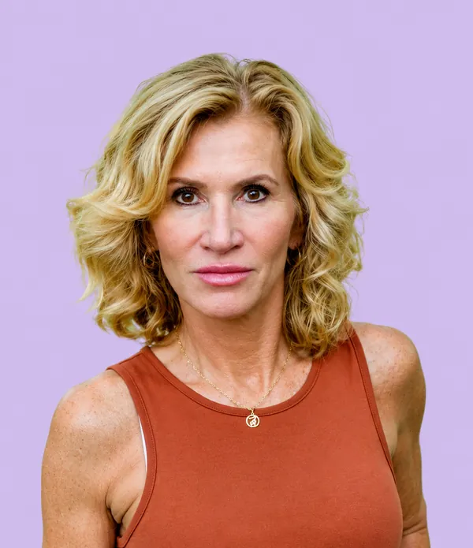

Marie Gronychová
Ředitelka Vlastivědného muzea Šumperk, archeoložka, organizátorka Šumperského hafana a propagátorka regionu
Celý svůj profesní život jsem spojila s historií, kulturou a naším regionem. Jako ředitelka Vlastivědného muzea v Šumperku se snažím, aby se historie a naše kulturní dědictví staly živou součástí každodenního života. Velkou radost mi přináší zejména projekt Muzejíčko, který jsem vytvořila pro děti a rodiny. Každý rok jej navštíví více než 20 000 lidí a jeho interaktivní výstavy putují po celé České republice. Právě tento projekt mi potvrdil, že dobré nápady, když se dělají s nadšením a poctivě, dokážou spojovat lidi napříč generacemi. Kandiduji, protože chci své zkušenosti využít také pro rozvoj Šumperka. Záleží mi na tom, aby naše město podporovalo kulturu, vážilo si své historie a rozvíjelo cestovní ruch. Stejně blízká je mi péče o veřejný prostor, zodpovědný přístup ke zvířatům a vytvoření důstojných podmínek pro městský útulek nebo záchytné kotce i výběhy pro psy. Věřím, že právě kvalitní prostředí, kultura a ohleduplnost k lidem i zvířatům vytvářejí město, ve kterém se dobře žije